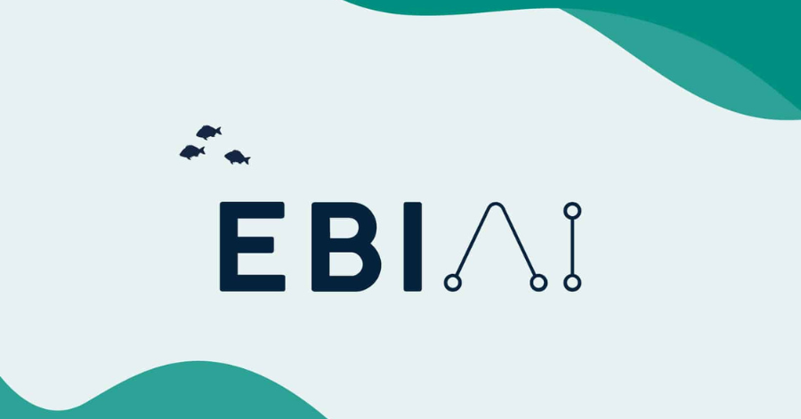
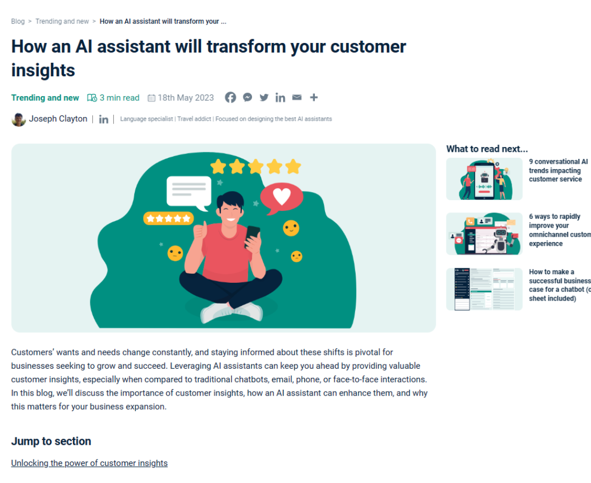
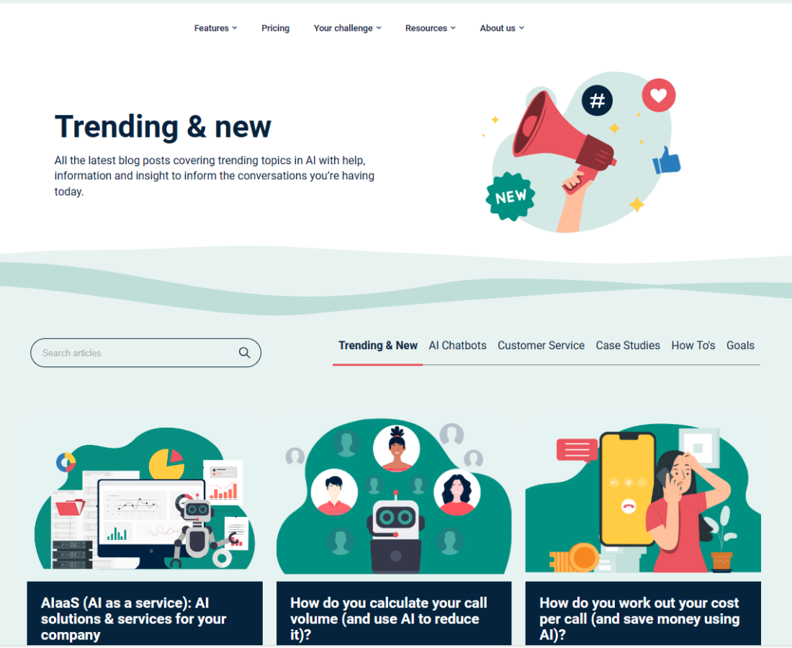

Main developer
EBI.AI is a UK-based company focused on helping its partners incorporate AI assistants into their systems. With their AI assistants, they are able to help various companies solve diverse business challenges and enhance branding using AI.
EBI.AI is one of the major clients of Offshorly Ltd. As one of the web and CMS developers at Offshorly, I was assigned to EBI.AI to serve as the main and sole developer of their marketing site, https://ebi.ai/. Despite being a junior developer with less than a year of professional development experience, I successfully fulfilled my responsibilities and played a significant role in giving their website a completely new and improved look.
As the main developer for EBI.AI, I was tasked with executing any tasks related to the website. Here are my key responsibilities:
Involves creating new web blocks and pages using the Advanced Custom Fields plugin on WordPress. Development includes customization of web blocks through PHP, HTML, CSS/SCSS, and JavaScript. The web blocks are then used to build pages across the website based on design specifications provided.
Involves updating the website's appearance by enhancing existing pages with new web blocks and refining elements like the navigation menu and footer for a more polished look and better user experience.
Involves creating templates for pages and blogs, each with a unique set of web blocks to suit specific design requirements and optimize memory usage. An optimized user-friendly blog template was also built to facilitate efficient blog content creation.
Involves coordinating with EBI.AI's blog content writer to ensure timely publication of blogs, conducting thorough checks on each post for link integrity, image quality, and metadata. This role highlights active involvement in EBI.AI's internal processes, contributing significantly to their operations.
Involves optimizing website performance based on various metrics, including improving website structure and memory usage efficiency to minimize loading times, and improving metrics like bounce rate and average page time measured on platforms like HubSpot.
Involves collaborating with EBI.AI's SEO Specialist to address SEO-related tasks, including resolving issues identified on platforms such as HubSpot and Google Analytics. This also entrails optimizeing blogs and pages for SEO by ensuring the presence of meta descriptions and functional links.
Involves maintaining and updating the website, including keeping WordPress, PHP, and plugins up to date for smooth operation, and promptly addressing any technical issues that arise.
Involves facilitating seamless collaboration between teams from EBI.AI and Offshorly, including project managers, content writers, designers, SEO specialists, co-developers, etc. Effective communication, both written and verbal, as well as proactive engagement, are key factors to this.
Involves active participation in website-related decision-making, including offering input on task execution methods, suggesting alternatives, and flagging potential drawbacks or blockers to ensure informed decisions.
This section provides an overview of the performance indicators and specifics showcasing my significant accomplishments and contributions to the EBI.AI website
Revamping the website involves updating all legacy pages with new and better blocks and improving the look of other elements such as the navigation menu and footer.
Under my supervision, 73 new pages were created using 5 distinct templates. The distribution of these templates is as follows: Template V3 (16 pages), Template V2 (56 pages), Industry (24 pages), Connector (4 pages), and Comparison (3 pages).
Optimizing and organizing blogs are essential in generating user traffic and improving a website's SEO ranking. Here are my best efforts as a developer in improving EBI.AI's blog section.
The legacy blog template included only a basic heading, header image, and text content. With my assistance, the revamped blog template now features a breadcrumbs section, author details, social media share buttons, a related blogs section, and an FAQ section. These enhancements have significantly improved the SEO ranking of EBI.AI's website.
Like the blog template, the main blog page, where all published blogs are displayed, is crucial for SEO, visibility, and user experience. The new blog page now categorizes blogs, allowing users to filter by category using tabs. Additionally, a search box has been added to enhance user experience.
Become part of EBI.AI's internal processes by regularly publishing blogs with the new template. As opposed to the legacy version's 30 blogs, over 70 blogs were published with the new blog template—a 233% increase.
As the main and sole developer, I am responsible for enhancing the speed and performance of EBI.AI's marketing website. Our team provides monthly reports to clients, detailing the website's health and performance metrics. Ensuring the site consistently meets industry standards and remains up-to-date is a key part of my role.